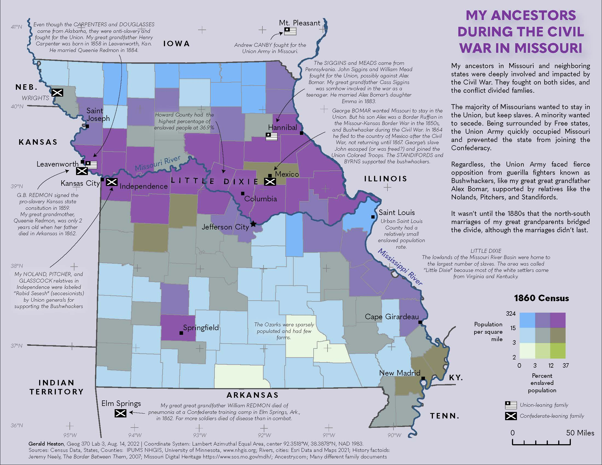

This map is from Geography 370, Lab 4. My interest in genealogy lead me to learn more about the US Civil War, and what my ancestors endured. Many of them lived in Misssouri at the time. They fought on both sides.
This map is a bivariate choropleth of 1860 county popluation and the percent enslaved population. The data came from the IPUMS National Historical GIS. Most of the enslaved people lived in the Missouri River valley, referred to as "Little Dixie".
My Union-leaning ancesors are indicated with a simplified US flag, and my Confederate-leaning ancestors are indicated with a simplified Confederate flag.
